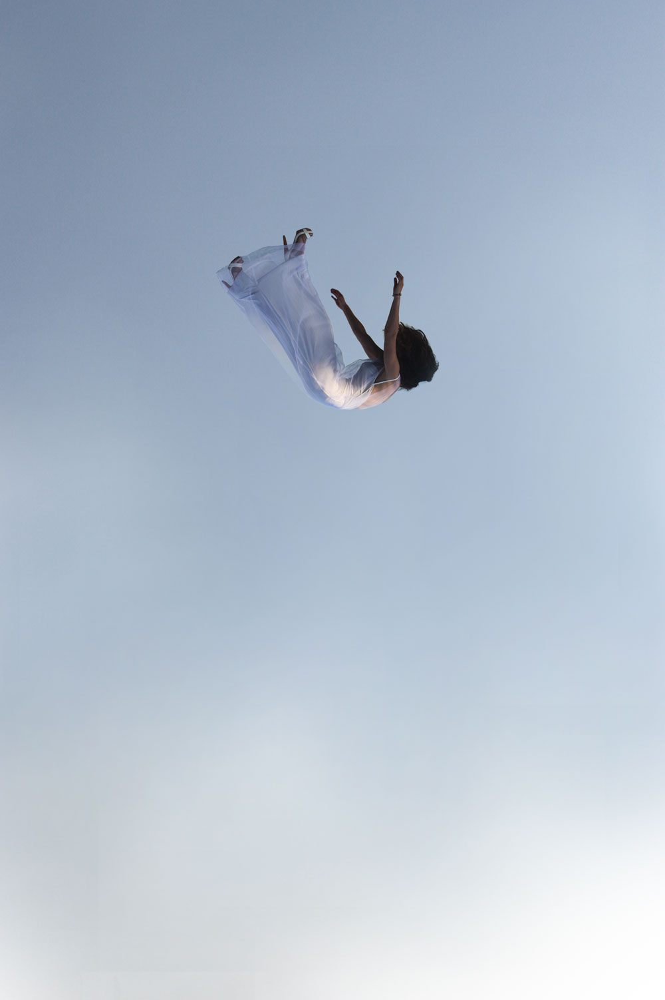

O’Neill 空间站中物体的运动
我们在地球上生活，会体验到重力作用。虽然很多时候我们都想摆脱重力，自由的飞翔，但是重力对于我们的生活和健康有很重要的作用。例如我们走路，如果没有重力，轻轻一碰地面就飘起来了，走起路来可就得手脚并用了。或许这并不坏，可是如果我们想要冲一杯热茶，谁知道却怎么也没法把热水倒出来。更要命的事情是，在失重状态下，人的骨骼和肌肉的会有严重的问题。[1]
所以，如果要建造大规模的民用空间站，需要先解决失重的问题。一个比较有趣的方法是 O’Neill 提出的通过让空间站旋转来模拟重力。
O’Neill Cylinder
O’Neill 这种空间站的最简单的模型是一个旋转的圆桶，例如下图里面这个大型的桶状结构：
（图片来源：http://imageshack.us/photo/my-images/11/1109702023694.jpg/ ）
当然，我们要研究物理，不需要这么花哨，只需要画一个圆筒就行了：
（图片来源 http://www.dvandom.com/coriolis/spacestation.html ）
只要让这个圆筒适当的旋转，生活在圆筒内壁的人就可以体验到模拟的重力。这是一个比较容易理解的现象，比如杂技团常常表演的水流星节目，也就是拿了一对盛有水的碗，用绳子连起来，然后旋转他们，如下图：
旋转时让碗口朝向内侧，这样水不会洒出来。原因大家也都清楚，是一种离心作用。
Coriolis Effect
但是，站在空间站内壁的人们还会体验到另外一种作用，就是 Coriolis 作用。关于这种作用，可以看下面的这个视频：
（iOS请点击视频链接：http://v.youku.com/v_show/id_XNjA0NjY5MzY=.html ）
这个视频说的是，如果我们站在一个转动的圆盘上面开炮，会发现似乎有一只神奇的手把炮弹推向了一边，而不是我们常识中的（在地面的投影）是一条直线。这只神奇的手就是科里奥利力。当然，如果我们站在地面上看，而不是圆盘上，炮弹自然还是一条直线。
当然 Coriolis effect 在地球表面（绝大多数地点）也是有的，只不过在日常起居生活中这种效应很小，所以我们下面的讨论自由落体运动的时候就忽略地表的 Coriolis effect 了。
自由落体运动
我们生活中最熟悉的运动之一是自由落体运动，例如：

（当然，我们通常说的自由落体是指是理想的情况，没有空气阻力。）
初速度为零，从距离地面高度为 h 的地方开始自由落体的物体的运动是由下面的公式描述的：
\begin{equation}
x=h-\frac{1}{2}g t^2
\end{equation}
其中 g 是指的重力常数。
那么如果我们在 O’Neill Cylinder 这种空间站中还会有这种自由落体运动么？
O’Neill Cylinder 中的“自由落体运动”
如果我们在空间站中建造一个比萨斜塔，高度为 h，然后我们从斜塔上面让一个小球自由的下落（从空间站参考系来看），那么小球的运动是什么样的呢？
简单的想想，落体运动应该是还有的，因为我们在斜塔顶部放手之后，从一个外部的观察者看来，小球接下来是在做匀速直线运动，这样总会撞到桶壁。只是这种运动还会是跟地面上的自由落体运动一样么？
经过简单的计算，在一个半径为 R 的旋转角速度为 $\omega$ 的 O’Neill Cylinder 中，如果斜塔的高度 h< <R，并且小球落地的时间是远远小于圆筒转动一个周期的时间，那么我们可以得到从斜塔上面落体的运动方程（保留到 $(\omega t)^3$）：
\begin{equation}
z'(t) = h – \frac{1}{2} R (\omega t)^2 \\
x'(t) = -\frac{1}{3}R(\omega t)^3
\end{equation}
这里的 z’ 坐标半径方向的，也就是空间站内部人看来的竖直向上，x’ 是指的沿着转动方向与 z’ 轴垂直的轴的坐标。下面是一个空间站的截面图，里面绘制了坐标的约定：
如果仅仅保留到 $(\omega t)^3$ 阶，那么在竖直方向上，确实看起来是一个自由落体运动，只需要让空间站的参数满足 $R\omega^2 = g$ 就可以跟地面一样了（g 是重力加速度）。但是，同时在（空间站内部看来的切平面）“水平”方向有个偏离（由上面提到的 Coriolis effect 引起的），但是这个偏离很小，如果空间站参数满足了竖直方向的自由落体运动跟地面一样，那么当物体“落地”后，这个偏离跟下落高度 h 的比值只有
\begin{equation}
\frac{x’}{h} = -\frac{2\sqrt{2}}{3}\sqrt{\frac{h}{R}}
\end{equation}
在上面所说的参数下，只要我们的下落高度跟空间站半径比起来小得多，这个偏离就可以忽略，空间站里面的自由落体就跟地面的自由落体相差不多。
如果我们的下落高度 h 太大，那么物体就会偏离半径这条线比较大了。
如果我们建造一个半径 10km 的空间站，并且让空间站转动角速度大约为 0.03 rad/s，那么空间站的内壁上面就会有一个跟地球表面重力加速度一样的“模拟的重力加速度”。如果我们从 10m 的地方让一个物体自由落体，“水平”方向的偏离只有 0.3 米。在正常生活中，完全是一个可以接受的偏离。
其他运动
这篇文章只是分析了自由落体运动，这个分析起来非常简单，我们甚至可以轻松的写出不带近似的完整的运动方程。那么，其他的运动如何？几个有趣的事情是：
- 在空间站内踢足球
- 在空间站内制作单摆（或者使用摆钟）
- 开车（高速和低速）
这些都是可以分析的。
参考
附录
这个问题的解法在这里：
ONeilCylinder (Credit: Carlton M. Caves)
- http://science1.nasa.gov/science-news/science-at-nasa/2001/ast02aug_1/ ↩

最近评论